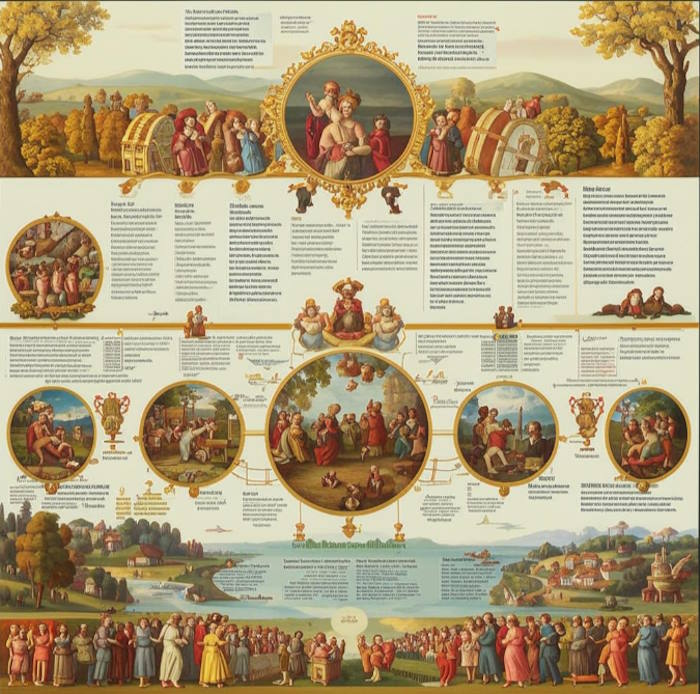

Чем отличаются между собой эпохи Возрождения?
Эпоха Возрождения (Ренессанс) охватывает период с XIV по XVII век и не является однородным явлением. Она подразделяется на несколько этапов, каждый из которых обладает уникальными чертами, отражающими культурные, социальные и интеллектуальные изменения в Европе. Эти различия проявляются в искусстве, литературе, философии и подходах к античному наследию.
Раннее Возрождение
Раннее Возрождение (XIV–XV века) зародилось в Италии, особенно во Флоренции, как реакция на средневековую схоластику. Этот этап характеризуется первыми шагами гуманизма и возрождением интереса к античным текстам. Художники, такие как Джотто, начали использовать перспективу, а мыслители, включая Петрарку, сосредоточились на индивидуальности. Архитектура, например, работы Брунеллески, демонстрировала возврат к классическим пропорциям.
Высокое Возрождение
Высокое Возрождение (конец XV – начало XVI века) считается пиком эпохи, особенно в Италии. Этот период связан с именами таких мастеров, как Леонардо да Винчи, Микеланджело и Рафаэль. Их работы, такие как «Мона Лиза», «Сотворение Адама» в Сикстинской капелле и «Афинская школа», отражают идеалы гармонии, красоты и человеческого величия. Искусство достигло совершенства в технике, а гуманистические идеи о ценности человека и его разума нашли своё высшее выражение.
Позднее Возрождение
Позднее Возрождение (XVI – начало XVII века) сопровождалось кризисом и переходом к маньеризму и барокко. В этот период, охвативший Северную Европу, возникали напряжённые эмоциональные работы, такие как картины Эль Греко. Философы, включая Монтеня, начали критиковать идеализм предшественников, а религиозные войны повлияли на искусство и литературу, добавив в них драматичности.
Таким образом, каждая эпоха Возрождения отражает эволюцию гуманистических идеалов, от зарождения до их трансформации под влиянием социальных и культурных изменений, подготовив почву для нового этапа европейской истории.